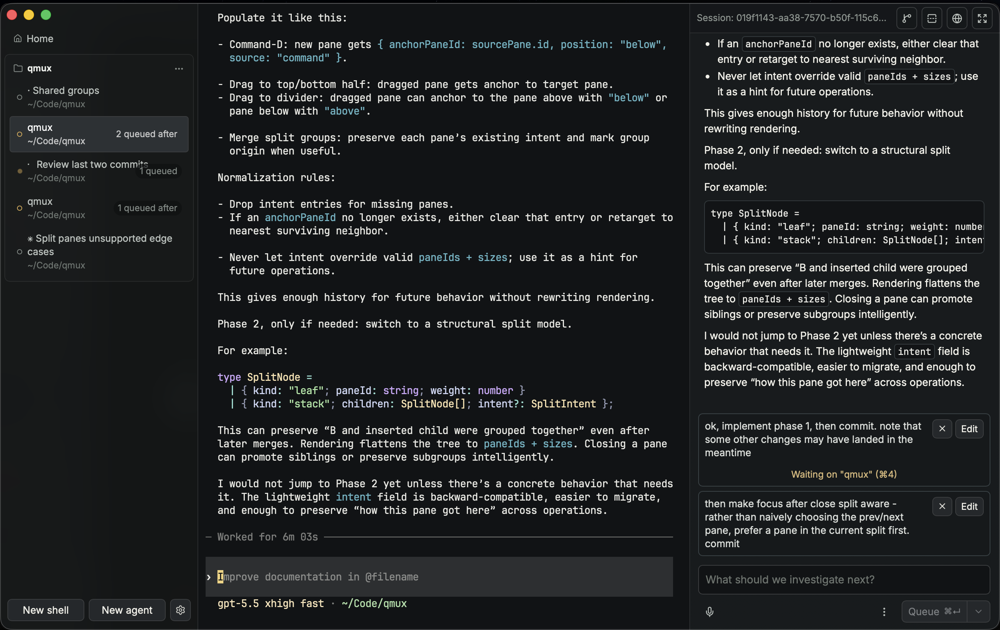

A powerful, native interface for coding agents.
Launch Claude Code, Codex, OpenCode, or Grok in real PTYs, organize them with vertical tabs and groups, and read their transcripts in a native sidebar.
Queue up work that runs automatically as agents go idle. Create tasks that wait on other terminals, so you can plan your work in parallel, and let agents implement in sequence. Never deal with a merge conflict or worktree error again.
macOS supported, Linux soon.

codex or claude in a shell pane to get started.qmux fork. The fork inherits the transcript and continues in the same folder, or in a new --worktree.⌘D), find in scrollback, copy-on-select, paste confirmation, ⌘-click links, and scroll position that survives layout changes.A macOS desktop app, terminal multiplexer, and agent control plane in one window. Agents run in real terminals, and qmux gives you a native UI on top: a transcript sidebar, a follow-up composer, status tracking, and different ways to queue and sequence work.
tmux runs in your terminal and multiplexes terminals; qmux is a terminal and multiplexes agents. It adds a native GUI, transcript rendering, agent status tracking, and follow-up queueing, which a terminal-only multiplexer can’t see into.
Both are agent-friendly terminals with vertical tabs. qmux is built around the agent transcript: a native sidebar timeline, a follow-up composer, a turn queue, and session forking, rather than terminal programmability.
Those hide the terminal behind a dashboard. In qmux the agent’s real TUI is always there, and the native layer augments it. You can drop to the raw terminal at any moment.
Claude Code and Codex are fully supported; OpenCode and Grok have limited support. Agents are integrated through a pluggable adapter layer, so new ones can be added. Contributions are welcome.
No. Run claude or codex in any shell pane and qmux routes it through the same machinery — status, transcript, and queue included.
We install wrapper commands for `claude`, `codex`, and other agents, that add hooks at launch. They report session start, prompts, tool use, permission requests, and idle state over a token-gated Unix socket. Hooks are only added when launching agents through our application, not globally.
macOS today. Linux support is planned.
No. The application is entirely local. Tab title generation uses Apple Foundation Models on your local device by default.
Recoverable panes and agents respawn on restart, along with groups, queued turns, and unsent drafts. State lives in .qmux/state.json in your workspace.
Nothing. The application is free and open source under the MIT License.